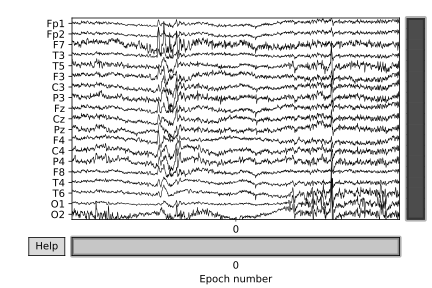
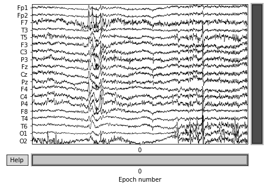

Raw Voltage Visualization¶
Raw voltage plot¶

from simpl_eeg import raw_voltage, eeg_objects
import warnings
warnings.filterwarnings('ignore')
Please include the line below in your IDE so that the changes would be simultaneously reflected when you make a change to the python scripts.
%load_ext autoreload
%autoreload 2
Define parameters¶
A detailed description of all parameters can be found in the raw_voltage.plot_voltage docstring:
help(raw_voltage.plot_voltage)
Help on function plot_voltage in module simpl_eeg.raw_voltage:
plot_voltage(epoch, remove_xlabel=False, **kwargs)
Return interactive raw voltage plot
Parameters
----------
epoch (mne.epochs.Epochs): Epoch to display
remove_xlabel (bool, optional): Whether to remove the x axis label. Defaults to False.
**kwargs : arguments
raw, events=None, duration=10.0, start=0.0, n_channels=20, bgcolor='w', color=None, bad_color=(0.8, 0.8, 0.8), event_color='cyan',
scalings=None, remove_dc=True, order=None, show_options=False, title=None, show=True, block=False, highpass=None, lowpass=None,
filtorder=4, clipping=1.5, show_first_samp=False, proj=True, group_by='type', butterfly=False, decim='auto', noise_cov=None,
event_id=None, show_scrollbars=True, show_scalebars=True, verbose=None)
# change values below to values of interest
experiment_path = "../../data/927"
nth_epoch = 0
Create epoched data¶
For additional options see Creating EEG Objects section.
epochs = eeg_objects.Epochs(experiment_path)
epoch = epochs.get_nth_epoch(nth_epoch)
Reading /Users/sasha/mds/simpl_eeg_capstone/data/927/fixica.fdt
Not setting metadata
Not setting metadata
33 matching events found
Setting baseline interval to [-0.2998046875, 0.0] sec
Applying baseline correction (mode: mean)
0 projection items activated
Loading data for 33 events and 2049 original time points ...
0 bad epochs dropped
Create the raw voltage plot¶
Generating the plot¶
voltage_plot = raw_voltage.plot_voltage(epoch)
voltage_plot;

Saving the plot¶
# You can change the plot to different formats by changing the format argument in the function.
# It supports 'png', 'pdf', 'svg'.
file_path = "../../exports/examples/voltage_plot.svg" # change the file path to where you would like to save the file
voltage_plot.savefig(file_path, format="svg")